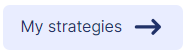
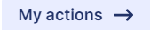
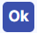
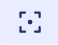
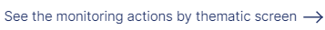

SEARCH TIP Press CTRL + F (Windows and Linux) or CMD + F (Mac) to search within this page.
To access this screen, click Home.
For more information on this screen, see the following documentations:
On the Action portfolio tab, you can view the actions deployed in the organization selected in the point of view (POV) through two different views:
-
The Calendar View
-
The List View
NOTE The Calendar view displays all actions, including the actions not attached to a strategy, whereas the List view displays only actions attached to a strategy.
In both views, you can export an action list.
You can also find information on Statuses and Alerts in this documentation.
Calendar View
The Calendar view allows you to track your actions over time against the calendar, depending on the periodicity (yearly, half-yearly, quarterly, monthly, weekly). By default, the periodicity displayed is yearly.
You can:
There are two blocks in the Calendar view:
-
The Advanced search block
-
The Calendar block
{kind=link}
Access the Full Screen
Full screen is available. To access the full screen:
-
Hover over the upper part of the Calendar block.
Two buttons appear at the top left of the Calendar block: the button and the button.
-
Click the button.
To return to the normal display, click the button at the top left of the screen.
Navigate through the Calendar Block
To navigate through the Calendar block:
-
Change the periodicity as desired. To do so, select the periodicity from the Display mode drop-down menu at the top right of the tab.
The Calendar block changes display mode.
-
Scroll the horizontal and vertical scroll bars of the Calendar block.
The green vertical bar is a cue point corresponding to the day selected with the button in the Advanced search block. The period corresponding to the cue point is also displayed in green. By default, the cue point is today’s date.
View Action Details
By default, you can view the action basic information on the action card:
-
The theme, the strategy and the target level 2 to which the action is attached
NOTE You can access the Strategy Reports screen. To do so, click the
button at the bottom of the strategy card. -
The action name
-
The action advancement against the calendar
-
The alerts attached to the action
To view all the action information:
-
Click the card of the action for which you want to view all information.
A new action card appears on the right side of the Calendar block.
More precisely, this new action card contains:
-
The action current status, that is, the status entered for the period that includes today's date
-
The alerts currently attached to the action
-
The action name
-
The action advancement against the calendar
-
The start and end dates of the action
-
The indication of the number of days remaining before the deadline, or the number of days late compared to the deadline
-
The action advancement against the final target in percentage
-
The strategy, the theme and the indicator to which the action is attached
-
-
Click the

button.The Action Reports screen appears. Using this screen, you can access all the action information.
You can also directly go to the Action Reports screen by clicking the button on the action card.
Search for an Action
To search for a specific action, you can either use the search box, the advanced search, or both.
To search through the search box:
-
Hover over the upper part of the Calendar block.
Two buttons appear at the top left of the Calendar block: the button and the button.
-
Click the button.
The search box appears.
-
Type one or more letters or keywords.
As you type, the letters or keywords are displayed in bold.
To search through the advanced search:
-
Select one or multiple filters in the Advanced search block:
-
The status
-
The alert
-
The theme
-
The strategy
-
The stake
-
The target level 1
-
The target level 2
-
-
Click the

button. -
If you want to view only the actions for which you are responsible, click the

button. -
To change the cue point, that is the green vertical bar:
-
Click the button, then click the desired day in the calendar widget that appears.
A calendar widget appears.
-
Click the desired cue day in the calendar widget.
-
List View
To view the List view, click List at the top left of the tab.
The action list, displayed as a nested grid, appears below the Advanced search block.
{kind=link}
From this view, you can:
Action List Description
You can view strategies and under them the actions to which they are attached:
| Column | Description |
|---|---|
|
Action |
The action name. |
|
Status |
The action current status, that is, the status entered for the period that includes today's date. NOTE For more information on statuses, see the Statuses section below. This column also contains the warnings currently attached to the action. NOTE For more information on warnings, see the Alerts section below. |
|
Advancement vs. calendar |
The action advancement against the calendar. |
|
Progression |
The action advancement against the target in percentage. |
|
Responsible(s) |
The users who are responsible for the action. |
|
Comment |
The action comment. |
Access Screens Related to Actions
From the action list, you can access three different screens:
To access the Action Reports screen:
-
Click the
 button at the end of any action line.
button at the end of any action line. -
Click the button.
To access the Action Follow-Up by Theme screen:
-
Click the
button at the end of any action line. -
Click the

button.
To access the Action Dashboard by Entity screen:
-
Click the
button at the end of any action line. -
Click the button.
Search for an Action
To search for a specific action, you can either use the search box, the advanced search, or both.
To search through the search box, type one or more letters or keywords.
As you type, the letters or keywords are displayed in bold.
To search through the advanced search:
-
Select one or multiple filters in the Advanced search block:
-
The status
-
The warning
-
The theme
-
The strategy
-
The stake
-
The target level 1
-
The target level 2
-
-
Click the button.
Export an Action List
To export an action list from the Calendar or the List view:
-
Click the
 button, then Export my actions.
button, then Export my actions.The Export my actions pop-up window appears with a download link.
-
Click the download link for the Excel file.
NOTE The exported action list takes into account the filters selected from the Action portfolio tab.
Statuses
Every action is attached to a status for a given entity and period:
| Column | Description |
|---|---|
|
Pending |
The action is waiting for validation. This is the default status for all actions that need validation. |
|
Rejected |
The pending action is rejected. |
|
Approved |
The pending action was approved. This is the default status for all actions that do not need validation. After approval, you can either implement or abort the action. |
|
In progress |
The implemented action is in progress. |
|
Standby |
The implemented action is on standby. |
|
Completed |
The implemented action is completed. |
|
Aborted |
The pending, approved or implemented action is aborted. |
NOTE To know how to change the action status, see the Statuses section in the Action Reports: Statuses and Alerts documentation.
Alerts
Alerts inform you that there are one or more issues pertaining to your action.
There are three types of alerts:
-
Budget: The alert is related to the action budget.
-
Deadline: The warning is related to the action deadline.
-
Other: The warning can be related to various reasons other than the action budget or deadline.
NOTE To know how to attach an alert to an action, see the Alerts section in the Action Reports: Statuses and Alerts documentation.